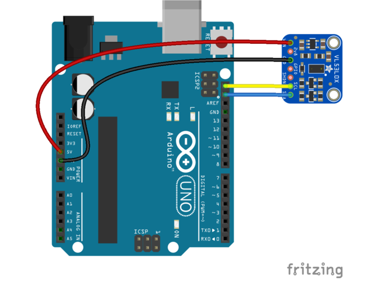

Sensors <<
Previous Next >> Accelerometer
Micro LIDAR
Adafruit VL53L0X Time of Flight Micro-LIDAR Distance Sensor Breakout
To begin reading sensor data, you will need to install the Adafruit_VL53L0X Library.
Arduino Libraries | All About Arduino Libraries | Adafruit Learning System
Connect with Arduino:
You can easily wire this breakout to any microcontroller, we'll be using an Arduino. For another kind of microcontroller, just make sure it has I2C, then port the API code. We strongly recommend using an Arduino to start though!
Connect Vin to the power supply, 3-5V is fine (red wire on STEMMA QT version). Use the same voltage that the microcontroller logic is based off of. For most Arduinos, that is 5V.
Connect GND to common power/data ground (black wire on STEMMA QT version).
Connect the SCL pin to the I2C clock SCL pin on your Arduino (yellow wire on STEMMA QT version). On an UNO & '328 based Arduino, this is also known as A5, on a Mega it is also known as digital 21 and on a Leonardo/Micro, digital 3.
Connect the SDA pin to the I2C data SDA pin on your Arduino (blue wire on STEMMA QT version). On an UNO & '328 based Arduino, this is also known as A4, on a Mega it is also known as digital 20 and on a Leonardo/Micro, digital 2.
The VL53L0X has a default I2C address of 0x29!
You can change it, but only in software. That means you have to wire the SHUTDOWN pin and hold all but one sensor in reset while you reconfigure one sensor at a time

Sensors <<
Previous Next >> Accelerometer